A practical guide to the core image-processing toolkit — enhancement, brightness and contrast, histogram equalization, spatial filtering, edge detection, thresholding, and morphological operations — the second week of the Digital Image Processing notes. Each technique is paired with the figures from the notes so the intuition lands before the math.
1. Enhancement
Image enhancement is a fundamental area in digital image processing focused on improving the visual appearance of an image. Real-world images often suffer from issues such as low contrast, noise, blur, poor lighting, and loss of detail. These degradations negatively impact both human perception and computer vision applications such as object detection, medical diagnosis, and surveillance.
2. Brightness
Image brightness (or luminous brightness) is a measure of intensity after the image has been acquired with a digital camera or digitized by an analog-to-digital converter. The color of light sources can vary greatly and consequently affect the way colors are perceived in a photograph. Most modern cameras come equipped with automatic white balance settings, but a deeper understanding of this process empowers photographers to manually make adjustments for superior results.
3. Contrast
Contrast refers to the amount of color or grayscale differentiation that exists between various image features in both analog and digital images. Images having a higher contrast level generally display a greater degree of color or grayscale variation than those of lower contrast.
There are two types of contrast that matter in practice:
- Luminance contrast refers to differences in brightness, and it carries most of the visual information you use to perceive patterns, depth, and motion.
- Color contrast (sometimes called chromatic contrast) refers to differences in hue or saturation. Color channels in your visual system don't convey fine detail the way brightness does, but they're just as effective for making large shapes and areas stand out from one another.
That's why a red button on a green background pops even if both colors are similar in brightness, yet small red text on a green background of the same brightness can be nearly impossible to read.
4. Histogram Equalization
Histogram equalization is a simple technique to enhance a digital image. It is especially effective in improving the visual quality of grayscale images. Histogram equalization has been applied extensively in medical imaging to improve the contrast of X-ray and MRI images. Histograms serve as graphical illustrations of the tonal distribution within an image. They provide insights into the number of pixels at each level of brightness present in the picture, thereby assisting photographers in comprehending the photo's exposure and contrast. By utilizing histogram manipulation techniques, photographers can greatly enhance images that initially display poor contrast. These methods empower them to fine-tune the brightness and contrast, thus elevating the overall quality of the photograph. A histogram represents the frequency distribution of data. It is usually visualized as a bar plot.
Histogram equalization improves contrast by redistributing pixel intensity values across the entire histogram.
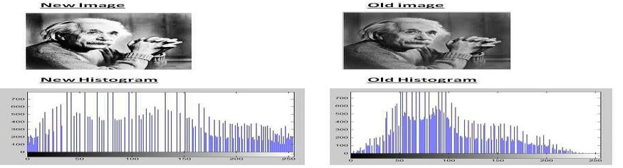
How it works:
- Computes the histogram of the image
- Converts it to a Probability Density Function
- Creates a Cumulative Distribution Function
- Remaps each pixel to a new intensity using this CDF
5. Filtering
Filtering is the process used to form a new image whose pixel values are a combination of the original pixel values. Filters are used to enhance or modify an image by altering the values of its pixels. They can be used to smooth an image, remove noise, sharpen edges, or extract specific features — modifying the pixels in an image based on some function of a local neighborhood of each pixel.
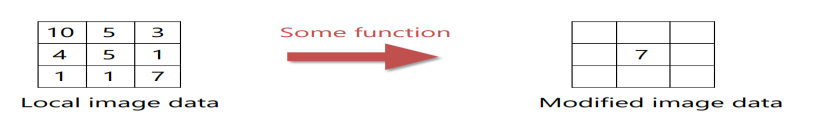
5.1 Mean Filter
The mean filter is a linear filter that smooths an image by replacing each pixel with the average of its neighboring pixels. It is commonly used to remove noise from images, but can also blur the image and reduce image detail.
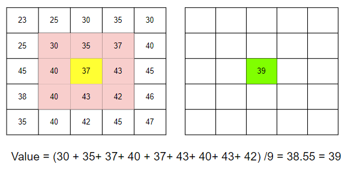
5.2 Gaussian Filter
Gaussian smoothing is a popular image-processing technique used to reduce noise and blur an image by convolving it with a Gaussian kernel. This filter is a 2-D convolutional operator, but the main difference is that a Gaussian filter uses a kernel which has the shape of a Gaussian hump. The Gaussian kernel weights pixels at its center much more strongly than at its boundaries, giving more weight to nearby pixels and less weight to distant pixels, creating a smoother and more natural-looking image. It is commonly used in computer vision, image processing, and signal processing applications.
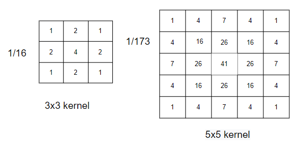
5.3 Median Filter
The median filter is a non-linear filter that replaces each pixel with the median value of its local neighborhood. It is commonly used to remove salt and pepper noise from images while preserving image detail and sharpness.
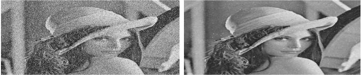
6. Edge Detection
Edge detection is an image-processing technique used to identify points in a digital image where the image brightness changes sharply or, more formally, has discontinuities. These points are organized into a set of curved line segments termed edges. Edges are significant local changes of intensity in an image, and they usually occur on the boundary between two different regions.
Edge-based segmentation is a technique used in image processing to identify and separate the edges of an image from the background. The method involves detecting the abrupt changes in intensity or color values of the pixels in the image and using them to mark the boundaries of the objects.
6.1 Sobel Edge Detection
Sobel edge detection is a method for edge detection that uses a gradient-based approach to detect edges in an image. The method involves computing the gradient magnitude and direction of the image using a Sobel operator, which is a convolution kernel that extracts horizontal and vertical edge information separately. It uses two 3×3 kernels which are convolved with the original image to calculate the approximations of the derivatives — one for horizontal changes, and one for vertical.
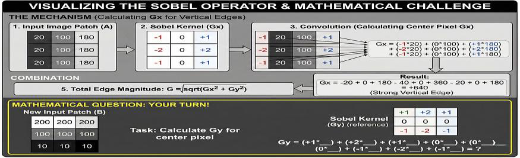
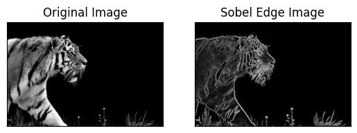
6.2 Canny Edge Detection
Canny Edge Detection is a multi-stage algorithm to detect a wide range of edges in images. It was developed by John F. Canny in 1986 and is known for its optimal edge detection capabilities. The algorithm follows a series of steps to reduce noise, detect edges, and improve the accuracy of edge detection.
| Strengths | Weaknesses | |
|---|---|---|
| Canny | Thin, clean edges; robust to noise | Computationally more expensive; requires parameter tuning (thresholds) |
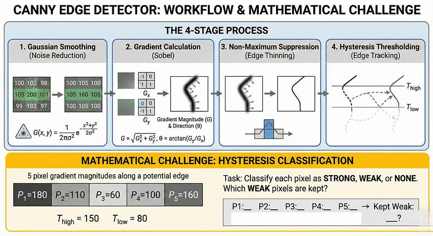
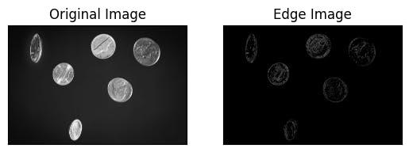
7. Thresholding
Thresholding is one of the simplest image segmentation methods. Here, the pixels are divided into classes based on their histogram intensity which is relative to a fixed value or threshold. This method is suitable for segmenting objects where the difference in pixel values between the two target classes is significant. In low-noise images, the threshold value can be kept constant, but with images with noise, dynamic thresholding performs better. In thresholding-based segmentation, the greyscale image is divided into two segments based on their relationship to the threshold value, producing binary images. Algorithms like contour detection and identification work on these binarized images. The two commonly used thresholding methods are:
7.1 Global Thresholding
Global thresholding is a technique used in image segmentation to divide images into foreground and background regions based on pixel intensity values. A threshold value is chosen to separate the two regions, and pixels with intensity values above the threshold are assigned to the foreground region and those below the threshold to the background region. This method is simple and efficient but may not work well for images with varying illumination or contrast. In those cases, adaptive thresholding techniques may be more appropriate.
7.2 Adaptive Thresholding
Adaptive thresholding is a technique used in image segmentation to divide an image into foreground and background regions by adjusting the threshold value locally based on the image characteristics. The method involves selecting a threshold value for each smaller region or block, based on the statistics of the pixel values within that block. Adaptive thresholding is useful for images with non-uniform illumination or varying contrast and is commonly used in document scanning, image binarization, and image segmentation. The choice of adaptive thresholding technique depends on the specific application requirements and image characteristics.
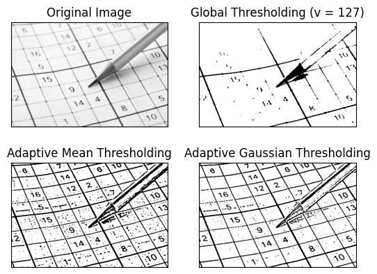
8. Morphology
Morphology is a broad set of image-processing operations that process images based on shapes. Morphological operations apply a structuring element to an input image, creating an output image of the same size. In a morphological operation, the value of each pixel in the output image is based on a comparison of the corresponding pixel in the input image with its neighbors.
8.1 Erosion
The value of the output pixel is the minimum value of all pixels in the neighborhood. In a binary image, a pixel is set to 0 if any of the neighboring pixels have the value 0. Morphological erosion removes floating pixels and thin lines so that only substantive objects remain. Remaining lines appear thinner and shapes appear smaller.
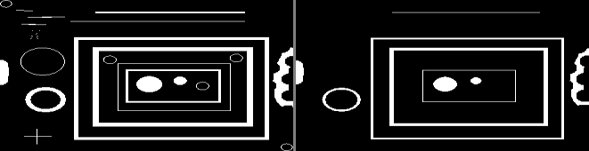
8.2 Dilation
The value of the output pixel is the maximum value of all pixels in the neighborhood. In a binary image, a pixel is set to 1 if any of the neighboring pixels have the value 1. Morphological dilation makes objects more visible and fills in small holes in objects. Lines appear thicker, and filled shapes appear larger.
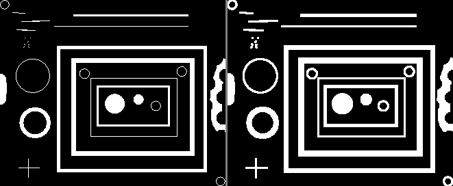
8.3 Opening
The opening operation erodes an image and then dilates the eroded image, using the same structuring element for both operations. Morphological opening is useful for removing small objects and thin lines from an image while preserving the shape and size of larger objects. This operation is normally used with binary images but can also be extended to grayscale images. In short: opening is erosion followed by dilation.
8.4 Closing
The closing operation dilates an image and then erodes the dilated image, using the same structuring element for both operations. Morphological closing is useful for filling small holes in an image while preserving the shape and size of large holes and objects.
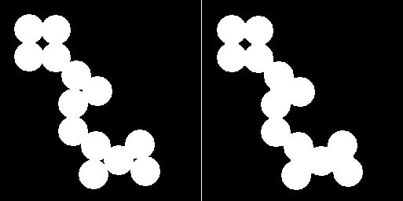
References
- Enhancement: https://medium.com/@prajakta.dhole22/image-enhancement-techniques-in-digital-image-processing-b0cd4f957290
- Brightness: https://medium.com/@flcamarao/image-processing-image-enhancements-f39e1a321081
- Contrast: https://evidentscientific.com/en/microscope-resource/tutorials/evidentmicd/digitalimaging/contrast
- Contrast: https://scienceinsights.org/what-is-image-contrast-and-how-does-it-work/
- Histogram: https://levelup.gitconnected.com/introduction-to-histogram-equalization-for-digital-image-enhancement-420696db9e43
- Histogram: https://medium.com/@prajakta.dhole22/image-enhancement-techniques-in-digital-image-processing-b0cd4f957290
- Filtering: https://medium.com/@wilson.linzhe/digital-image-processing-in-c-chapter-1-mean-and-median-filter-b4c4d0775e14
- Filtering: https://www.scaler.com/topics/filtering-in-image-processing/#gaussian-filter
- Filtering: https://www.cs.cornell.edu/courses/cs5670/2022sp/lectures/lec01_filter_for_web.pdf
- Edge detection: https://blog.roboflow.com/edge-detection/
- Edge detection: https://medium.com/@global.himani26/edge-detection-in-computer-vision-a-comprehensive-guide-with-python-e1dc846accd9
- Edge detection: https://encord.com/blog/image-segmentation-for-computer-vision-best-practice-guide/
- Thresholding: https://encord.com/blog/image-segmentation-for-computer-vision-best-practice-guide/
- Thresholding: https://medium.com/@aryanrusia8/thresholding-in-image-processing-understanding-global-otsu-and-adaptive-methods-d8ff312b3fa6
- Morphology: Erosion, Dilation, Opening, Closing
- Article: “Fundamental Image Enhancement, Filtering and Segmentation Techniques”
- Filtering figures: https://medium.com/@shashikadilhani97/digital-image-processing-filters-832ec6d18a73